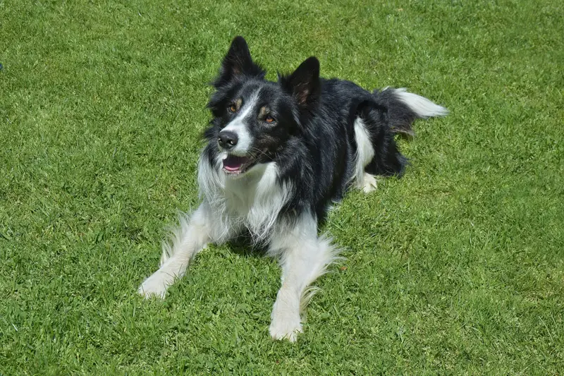
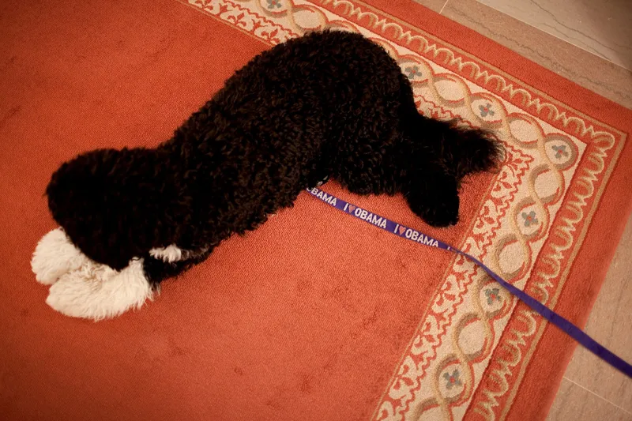

Dogs
Plain dog care answers: chocolate, xylitol, grapes, onions, macadamia nuts, bread dough, ibuprofen, marijuana, feeding and bathing, with cited sources.

Questions
 DogCan dogs eat chocolate?→
DogCan dogs eat chocolate?→ DogCan dogs eat grapes?→DogCan dogs eat macadamia nuts?→
DogCan dogs eat grapes?→DogCan dogs eat macadamia nuts?→ DogCan dogs eat onions or garlic?→DogCan dogs eat raw bread dough?→
DogCan dogs eat onions or garlic?→DogCan dogs eat raw bread dough?→ DogHow often should I bathe my dog?→
DogHow often should I bathe my dog?→ DogHow often should I feed my dog?→
DogHow often should I feed my dog?→
DogIs ibuprofen safe for dogs?→DogIs marijuana toxic to dogs?→ DogIs xylitol toxic to dogs?→
DogIs xylitol toxic to dogs?→